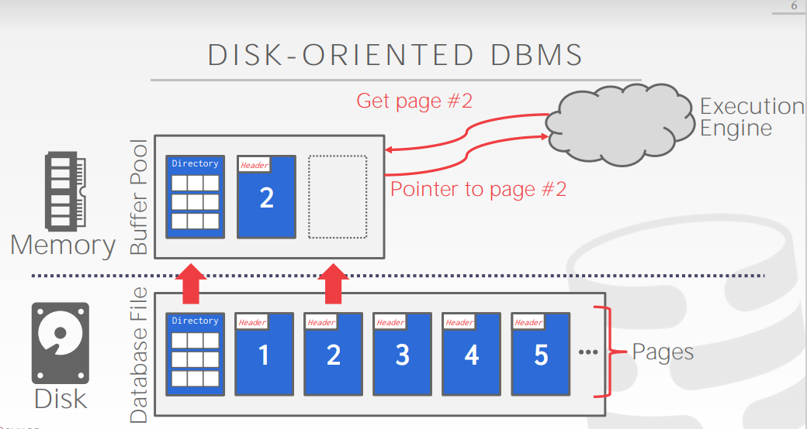
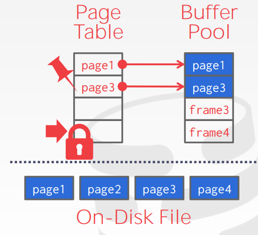
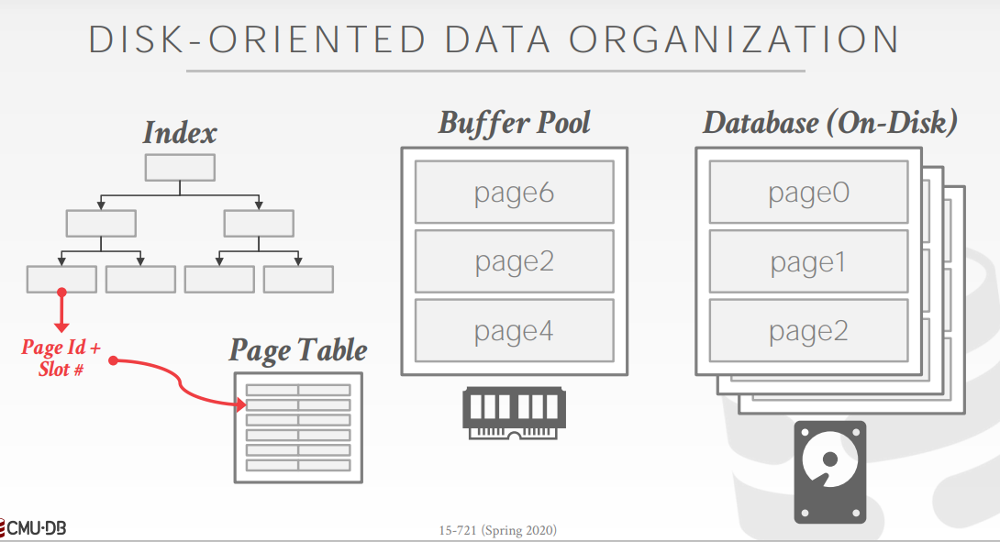
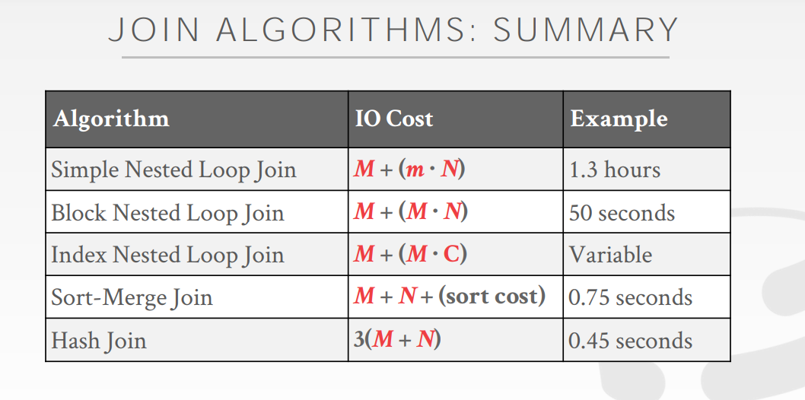
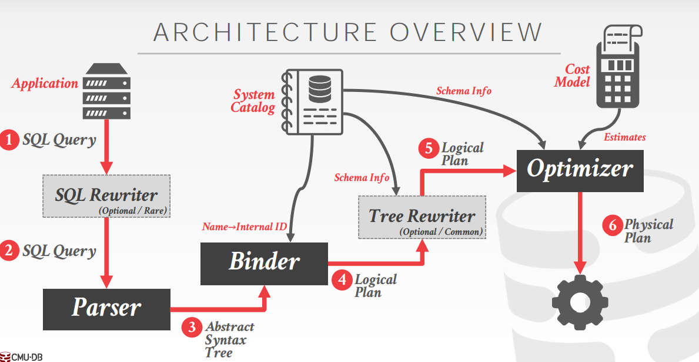
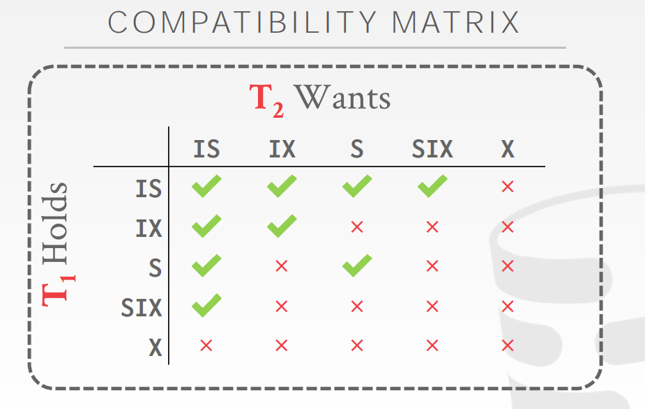
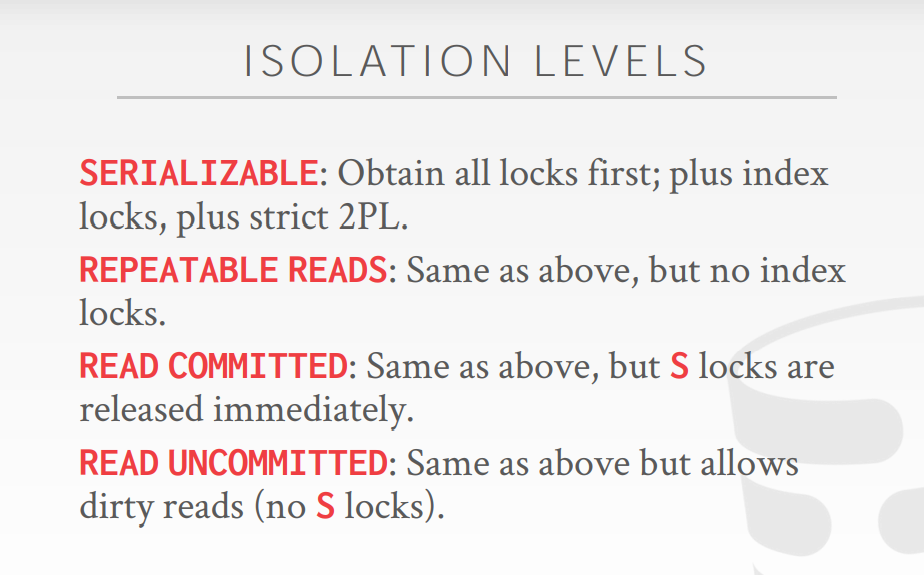
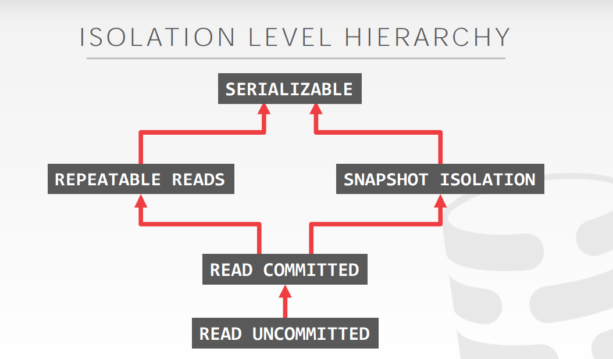
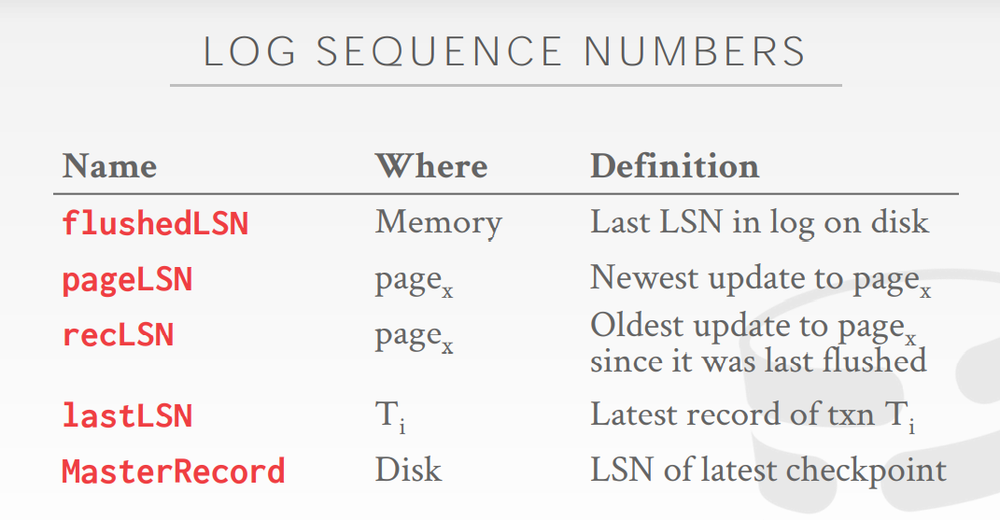

Database Outline
Database Outline
Disk Manager
Responsibilities:
- represents the database in files on disk
- manages its memory and move data back-and-forth from disk
-
How the DBMS represents the database in files on disk
-
File storage
-
n-array storage model (row store, apply for OLTP)
-
advantage:
fast inserts, updates, and deletes
good for queries that need the entire tuple
-
disadvantage:
Not good for scanning large portions of the table and/or a subset of the attributes
-
-
decomposition storage model (column store, apply for OLAP)
Tuple identification
-
Fixed-length offset
Each value is the same length for an attribute
-
Embedded tuple ids
Each value is stored with its tuple id in a column
-
advantage:
reduces the amount wasted I/O because the DBMS only reads the data that it needs
better query processing and data compression
-
disadvantage:
slow for point queries, inserts, updates, and deletes because of tuple splitting/stitching
-
-
-
Page layout
-
Slotted pages
-
Log-structed file organization
Log-structed compaction (level compaction or universe compaction)
-
-
Tuple layout
-
Data representation
Type Representation INTEGER/BIGINT/SMALLINT/TINYINT C/C++ Representation FLOAT/REAL vs. NUMERIC/DECIMAL IEEE-754 Standard / Fixed-point Decimals VARCHAR/VARBINARY/TEXT/BLOB Header with length, followed by data bytes TIME/DATE/TIMESTAMP 32/64-bit integer of (micro)seconds since Unix epoch -
External value storage -> BLOB
The DBMS cannot manipulate the contents of an external file because of without durability & transaction protections
-
-
-
How the DBMS manages its memory and move data back-and-forth from disk
-
Spatial Control: (where)
Goal: keep pages that are used together often as physically close together as possible on disk
-
Temporal Control: (when)
Goal: minimize the number of stalls from having to read data from disk.
-
Buffer Pool Manager
Memory region organized as an array of fixed-size pages.
An array entry is called a frame.
The page table keeps track of pages that are currently in memory and also maintains additional meta-data per page.
-
Allocation policies
-
Global policies
Make decisions for all active txns.
-
Local policies
Allocate frames to a specific txn without considering the behavior of concurrent txns. Still need to support sharing pages.
-
-
Optimization
-
multiple buffer pools
Helps reduce latch contention and improve locality. Use embed object id or hashing for mapping.
-
pre-fetching
-
scan sharing
-
buffer pool bypass
The sequential scan operator will not store fetched pages in the buffer pool to avoid overhead.
-
-
Buffer replacement polices
- Least-Recently-Used
- Clock
LRU and CLOCK replacement policies are susceptible to sequential flooding.
sequential flooding
A query performs a sequential scan that reads every page and this pollutes the buffer pool with pages that are read once and then never again.
- LRU-K
- Localization
- Priority hints
Access Methods
Responsibilities:
- Data Organization (in memory / pages)
- Concurrency
-
Data structures designed for Disk-oriented database
- hash table
- hash function (how to map)
- CRC-64
- Google CityHash
- …
- hashing schema (how to handle key collisions)
- static hashing schema
- Linear probe hashing
- Robin hood hashing
- Cuckoo hashing
- static hashing schema
- dynamic hashing schema
- chained hashing
- extendible hashing
- linear hashing
- hash function (how to map)
- B+Tree
-
leaf node values
- Record Ids -> A pointer to the location of the tuple that the index entry corresponds to.
- Tuple Data -> The actual contents of the tuple is stored in the leaf node.
-
duplicate keys
- Append record id
- Overflow leaf nodes
-
node size
The slower the storage device, the larger the optimal node size for a B+Tree.
-
merge threshold
Delaying a merge operation may reduce the amount of reorganization.
-
variable length keys
-
pointers
-
variable length nodes (requires careful memory management)
-
padding
-
key map / indirection
Embed an array of pointers that map to the key + value list within the node.
-
-
intra-node search
-
linear
-
binary
-
interpolation
Approximate location of desired key based on known distribution of key.
-
-
optimization
-
prefix compression
Instead of storing the entire key each time, extract common prefix and store only unique suffix for each key.
-
deduplication
The leaf node can store the key once and then a maintain a list of record ids with that key.
-
suffix truncation
Store a minimum prefix that is needed to correctly route probes into the index.
-
bulk insert
to build a new B+Tree for an existing table, first sort the keys and then build the index from the bottom up.
-
pointer swizzling
If a page is pinned in the buffer pool, then we can store raw pointers instead of page ids.
-
-
Trie tree
-
Trie key span
The span of a trie level is the number of bits that each partial key / digit represents.
-
-
Radix tree
-
Trie variant
- Judy Arrays (HP)
- Linear Node
- Bitmap Node
- Uncompressed Node
- ART Index (HyPer)
- Masstree (Silo)
- Judy Arrays (HP)
- hash table
-
Data structure designed for in-memory databases
-
T Trees
Based on AVL Trees. Instead of storing keys in nodes, store pointers to their original values.
Advantages:
- Uses less memory because it does not store keys inside of each node.
- The DBMS evaluates all predicates on a table at the same time when accessing a tuple (i.e., not just the predicates on indexed attributes).
Disadvantages:
- Difficult to rebalance.
- Difficult to implement safe concurrent access.
- Must chase pointers when scanning range or performing binary search inside of a node. (greatly hurts cache locality)
-
BW Tree
Latch-free B+Tree index built for the Microsoft Hekaton project.
- garbage collection
- Optimization (CMU open BW Tree)
- Pre-Allocated Delta Records
- Mapping Table Expansion
-
-
Index types
-
Partial index PostgreSQL: Documentation: 12: 11.8. Partial Indexes
-
Covering index PostgreSQL: Documentation: 11: 11.9. Index-Only Scans and Covering Indexes
-
index include column
-
functional / expression index PostgreSQL: Documentation: 12: 11.7. Indexes on Expressions
-
Inverted index -> good at keyword searches
An inverted index stores a mapping of words to records that contain those words in the target attribute.
-
-
Index concurrency control
A protocol’s correctness criteria can vary:
- Logical Correctness: can a thread see the data that it is supposed to see
- Physical Correctness: is the internal representation of the object found
-
Latch implement
- Blocking OS mutex
- Test-and-Set Spin Latch (TAS)
- Reader-Writer Locks
- Adaptive Spinlock
- Queue-based Spinlock (MCS)
-
Hash table latching
- Page latches
- Slot latches
-
B+ tree latching
-
latch crabbing / coupling
Basic Idea:
- Get latch for parent
- Get latch for child
- Release latch for parent if “safe”. (A safe node is one that will not split or merge when updated.)
-
better latching algorithm
Instead of assuming that there will be a split/merge, optimistically traverse the tree using read latches. If you guess wrong, repeat traversal with the pessimistic algorithm.
-
B link-Tree Optimization
When a leaf node overflows, delay updating its parent node.
-
versioned latch coupling
Optimistic crabbing scheme where writers are not blocked on readers.
-
Operator Execution
-
Operator Algorithms
-
Sort
-
External merge sort
Pass #0: Use B buffer pages and Produce ⌈N / B⌉ sorted runs of size B
Pass #1,2,3…: Merge B-1 runs (i.e., K-way merge)
-
B+ tree sorting (clustered / unclustered)
-
Optimization
- Chunk I/O into large blocks to amortize costs.
- Double-buffering to overlap CPU and I/O.
-
-
Aggregations
We don’t always need the data to be ordered, so hashing is a better alternative (only need to remove duplicate, no need for sorting and cheaper computation).
-
Sorting
-
Hashing
-
External hashing aggregation
Phase #1: partition
Divide tuples into buckets based on hash key and write them out to disk when they get full.
Phase #2: reHash
Build in-memory hash table for each partition and compute the aggregation
-
-
-
Join
Join vs Cross-Product
Join is the most common operation and thus must be carefully optimized.
Cross-Product followed by a selection is inefficient because the cross-product is large.
-
Cost Analysis Criteria (determine whether one join algorithm is better than another)
Metric: # of IOs to compute join
-
Join Algorithm
- Nested loop join
- Sort-Merge join
- Hash join
For table R owns M pages m tuples and table S owns N pages n tuples.
 -
-
-
Query Processing Models
-
Iterator model (Volcano / Pipeline)
The operator implements a loop that calls Next on its children to retrieve their tuples and then process them.
-
Materialization model (better for OLTP)
Each operator processes its input all at once and then emits its output all at once.
-
Vectorized / Batch model (better for OLAP)
Like the iterator model, but each operator emits a batch of tuples instead of a single tuple.
Access method
-
Sequential Scan
Optimizations
-
Prefetching
-
Buffer Pool Bypass
-
Parallelization
-
Heap Clustering
-
Zone Maps
Pre-computed aggregates for the attribute values in a page.
-
Late Materialization
Delay stitching together tuples until the upper parts of the query plan.
-
-
Index Scan
Picks an index to find the tuples that the query needs.
-
Multi-Index / “Bitmap” Scan
If there are multiple indexes that the DBMS can use for a query
- Compute sets of record ids using each matching index
- Combine these sets based on the query’s predicates (union / intersect)
- Retrieve the records and apply any remaining predicates.
Halloween problem can occur on clustered tables or index scans.
Anomaly where an update operation changes the physical location of a tuple, which causes a scan operator to visit the tuple multiple times.
The DBMS represents a WHERE clause as an expression tree (flexible but slow) for expression evaluation.
-
-
Runtime Architectures
-
Process per DBMS Worker
Relies on OS scheduler and shared memory.
A process crash doesn’t take down entire system.
-
Process pool
Relies on OS scheduler and shared memory.
Bad for CPU cache locality.
-
Thread per DBMS Worker
DBMS manages its own scheduling, may or may not use a dispatcher thread.
Thread crash (may) kill the entire system.
-
-
Parallel Query Execution
-
Execution Parallelism
-
Inter-Query (Different queries are executed concurrently)
If multiple queries are updating the database at the same time, concurrency control is involved
-
Intra-Query (Execute the operations of a single query in parallel)
-
Intra-Operator (Horizontal)
Decompose operators into independent fragments that perform the same function on different subsets of data.
-
Inter-Operator (Vertical) (Pipelined parallelism)
Operations are overlapped in order to pipeline data from one stage to the next without materialization.
-
Bushy
Extension of inter-operator parallelism. Exchange nodes inserted over essentially independent query plan fragments allow those fragments to execute independently of one another.
-
-
-
I/O Parallelism
- Multiple Disks per Database
- One Database per Disk
- One Relation per Disk
- Split Relation across Multiple Disks
Partition
Split single logical table into disjoint physical segments that are stored/managed separately.
- vertical partitioning (store a table’s attributes in a separate location)
- horizontal partitioning (divide the tuples of a table up into disjoint segments based on some partitioning key)
- hash partitioning
- range partitioning
- predicate partitioning
-
Query planning
-
Heuristics / Rules (Rewrite the query to remove stupid / inefficient things)
Two relational algebra expressions are equivalent if they generate the same set of tuples. The DBMS can identify better query plans without a cost model. This is often called query rewriting.
An optimizer implemented using if/then/else clauses or a pattern-matching rule engine, transforms a query’s expressions (e.g., WHERE clause predicates) into the optimal/minimal set of expressions.
-
Logical query optimization
-
split conjunctive predicates
Decompose predicates into their simplest forms to make it easier for the optimizer to move them around.
-
predicate pushdown
Move the predicate to the lowest point in the plan after Cartesian products.
-
replace cartesian products with joins
Replace all Cartesian Products with inner joins using the join predicates
-
projection pushdown
Eliminate redundant attributes before pipeline breakers to reduce materialization cost.
For nested sub-queries
- rewrite to de-correlate / flatten them
- decomposed nested query and store result to temporary table
-
-
-
Cost-based Search (Use a model to estimate the cost of executing a plan)
-
cost model component
- Physical costs (predict CPU cycles, I/O, … and it is heavily depends on hardware)
- Logical costs (estimate operator result sizes and independency of the operator algorithm)
- Algorithm costs (complexity of the operator algorithm implementation)
-
selectivity estimations
statistic:
For each relation R, the DBMS maintains the following information:
- NRNR : Number of tuples in R.
- V(A,R)V(A,R): Number of distinct values for attribute A.
The selection cardinality SC(A,R) is the average number of records with a value for an attribute A given NR/V(A,R)NR/V(A,R)
The selectivity (sel) of a predicate P is the fraction of tuples that qualify.
Formula depends on type of predicate (Equality / Range / Negation / Conjunction / Disjunction) and relies on the following assumptions
-
Assumption #1: Uniform data
The distribution of values (except for the heavy hitters) is the same.
-
Assumption #2: Independent predicates
The predicates on attributes are independent.
-
Assumption #3: Inclusive principle
The domain of join keys overlap such that each key in the inner relation will also exist in the outer table.
-
non-uniform approximation
- equi-width histogram (all buckets have the same width)
- equi-depth histogram (vary the width of buckets so that the total number of occurrences for each bucket is roughly the same)
- sketches (probabilistic data structures that generate approximate statistics about a data set)
- sampling
-
query optimization
-
Single relation query planning
- Pick the best access method.
- Predicate evaluation ordering.
-
Multiple relation query planning
- Enumerate relation orderings (need to restrict search space)
- Enumerate the plans for each operator
- Enumerate access method choices for each table
Use dynamic programming to reduce the number of cost estimations.
-
Nested sub-queries
-
-
Concurrency Control
Transaction
Correct criteria
Atomicity Consistency Isolation Durability
-
Atomicity
- Logging
- Shadow Paging
-
Consistency
-
database consistency (accurately models the real world and follows integrity constraints)
-
transaction consistency
If the database is consistent before the transaction starts (running alone), it will also be consistent after. It is the application’s responsibility.
-
-
Isolation
A concurrency control protocol is how the DBMS decides the proper interleaving of operations from multiple transactions.
- pessimistic
- optimistic
Interleaved execution anomalies
- Read-Write Conflict -> unrepeatable read
- Write-Read Conflict -> dirty read
- Write-Write Conflict -> overwrite uncommitted data
Schedule correctness judgement
If a schedule is equivalent to some serial execution, we judge it is correct.
-
Serial schedule
A schedule that does not interleave the actions of different transactions.
-
Equivalent schedule
For any database state, the effect of executing the first schedule is identical to the effect of executing the second schedule.
-
Serializable schedule
A schedule that is equivalent to some serial execution of the transactions.
Different levels of serializability
-
Conflict Serializability (most DBMSs try to support it)
Verify using either the “swapping” method or dependency graphs.
-
View Serializability (no DBMS can do this)
No efficient way to verify.
Serial ⫋⫋ Conflict Serializable ⫋⫋ View Serializable ⫋⫋ All Schedules
-
Durability
- logging
- shadow paging
Pessimistic
-
Basic Lock Type:
- S-LOCK
- X-LOCK
-
Two-phase locking
Phase #1. Growing
Phase #2. Shrinking
Problem: it is subject to cascading aborts.
-
Strong strict 2PL
Release all locks at end of txn.
Allows only conflict serializable schedules.
-
2PL deadlocks
-
deadlock detection (waits-for graph)
- deadlock handling:
- victim selection
- rollback length: completely or minimally
- deadlock handling:
-
deadlock prevention
Assign priorities based on timestamps: Older Timestamp = Higher Priority
- wait-die
If requesting txn has higher priority than holding txn, then requesting txn waits for holding txn.
- wound-wait
If requesting txn has higher priority than holding txn, then holding txn aborts and releases lock.
-
-
Lock granularities
Trade-off between parallelism versus overhead.
Fewer locks, larger granularity vs. more locks, smaller granularity
-
intention locks
-
Intention-Shared (IS)
-
Intention-Exclusive (IX)
-
Shared+Intention-Exclusive (SIX)

-
-
Optimistic
Timestamp Ordering (T/O)
-
timestamp allocation
- system clock
- logical counter
- hybrid
-
Basic Timestamp Ordering (T/O) Protocol
Thomas Write Rule (reduce abort) :
If TS(Ti) < W-TS(X), ignore the write to allow the txn to continue executing without aborting.
-
Optimistic Concurrency Control
- Read Phase
- Validation Phase
- Backward validation
- Forward validation
- Write Phase
-
Phantom problem
- Re-Execute Scans
- Predicate Locking
- Index Locking

MVCC
Snapshot isolation
Write skew anomaly
-
Concurrency control protocol (the default is Timestamp ordering)
-
Version storage
-
Append only storage
chain ordering (oldest to newest / newest to oldest)
-
Time-travel storage
-
Delta storage
-
-
Garbage collection
-
Look for expired versions
-
Version tracking
-
Tuple level
background vacuuming vs. cooperative cleaning
-
Transaction level
-
Epochs
-
-
-
Decide when it is safe to reclaim memory
- Frequency
- Periodically
- Continuously
- Granularity
- Single version
- Group version
- Tables
- Comparison unit (determine whether version(s) are reclaimable)
- Timestamp
- Interval
- Frequency
-
-
Index management
- Logical pointers
- Physical pointers
Modern MVCC Implementation
- Hekaton (SQL Server)
- TUM HyPer
- SAP HANA
- CMU Cicada
Recovery
Ensure database consistency, transaction atomicity, and durability despite failures
-
Actions during normal txn processing to ensure that the DBMS can recover from a failure.
-
Failure classification
-
Transaction failures
-
logical errors
Transaction cannot complete due to some internal error condition (e.g., integrity constraint violation).
-
internal state errors
DBMS must terminate an active transaction due to an error condition (e.g., deadlock).
-
-
System failures
-
software failure
Problem with the OS or DBMS implementation (e.g., uncaught divide-by-zero exception).
-
hardware failure
The computer hosting the DBMS crashes (e.g., power plug gets pulled).
-
-
Storage media failures
-
non-repairable hardware failure
A head crash or similar disk failure destroys all or part of non-volatile storage.
Destruction is assumed to be detectable (e.g., disk controller use checksums to detect failures)
-
-
-
Undo & Redo
Undo: The process of removing the effects of an incomplete or aborted txn.
Redo: The process of re-instating the effects of a committed txn for durability.
-
Steal Policy
Whether the DBMS allows an uncommitted txn to overwrite the most recent committed value of an object in non-volatile storage
-
Force Policy
Whether the DBMS requires that all updates made by a txn are reflected on non-volatile storage before the txn can commit.
no-steal + force -> shadow paging
-
disadvantages:
copying the entire page table is expensive
commit overhead is high
steal + no-force -> write-ahead log
-
-
Logging schema
- physical logging
- logical logging
- physiological logging
-
Checkpoints
-
-
Actions after a failure to recover the database to a state that ensures atomicity, consistency, and durability.
Mains ideas of ARIES
- WAL with steal / no-force
- fuzzy checkpoints (snapshot of dirty page ids)
- Redo everything since the earliest dirty page
- Undo txns that never commit
- Write CLRs when undoing, to survive failures during restarts
-
Write-Ahead Logging
-
Log Sequence number

-
-
Fuzzy Checkpointing
-
Non-fuzzy checkpoints
The DBMS halts everything when it takes a checkpoint to ensure a consistent snapshot.
-
Slightly better checkpoints
- Active transaction table (ATT)
- Dirty Page Table (DPT)
-
Fuzzy checkpoints
Allows active txns to continue the run while the system flushes dirty pages to disk
Checkpoint boundaries
- begin (indicates start of checkpoint)
- end (contains ATT+DPT)
-
-
Recovery phase
Phase #1: Analysis
Phase #2: Redo
Phase #3: Undo
Others: Compression
-
granularity
- block level
- tuple level
- attribute level
- column level
-
columnar compression
-
null supression
Consecutive zeros or blanks in the data are replaced with a description of how many there were and where they existed.
-
run-length encoding
Compress runs of the same value in a single column into triplets:
- the value of the attribute
- the start position in the column segment
- the # of elements in the run
Requires the columns to be sorted intelligently to maximize compression opportunities.
-
bitmap encoding
Store a separate bitmap for each unique value for an attribute where an offset in the vector corresponds to a tuple.
-
delta encoding
Recording the difference between values that follow each other in the same column.
-
incremental encoding
Type of delta encoding that avoids duplicating common prefixes/suffixes between consecutive tuples. This works best with sorted data.
-
mostly encoding
When values for an attribute are “mostly” less than the largest size, store them as smaller data type
-
dictionary encoding
Replace frequent patterns with smaller codes.
- dictionary construction
- all at once
- incremental
- dictionary scope
- block level
- table level
- multi-table
- dictionary data structures
- array
- hash table
- b+ tree
- dictionary construction
-